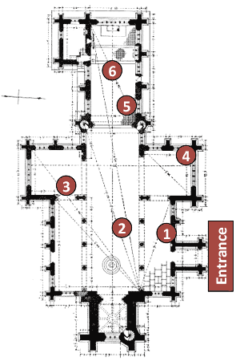

Several artworks are placed within the Church of St. Andrew in Heckington, which draw attention to and creatively respond to the building’s architectural and spatial qualities, its connections with everyday life, and ‘lost’ aspects of its history. Artworks include physical pieces, video projections, and interactive media accessed through your mobile phone or tablet computer. These artworks are the result of a collaboration between Newcastle University, Liverpool-based creative consultancy Draw & Code, architectural illustrator Allan T Adams, and the Church of St. Andrew’s in Heckington.
The map below shows the location of artworks. To access the interactive media artworks, go to the relevant location then tap the relevant Start button below.
Layers of gargoyles and stories imagined and made by St. Andrew’s Primary School pupils.
Video and audio micro-projection.
Making visible and audible an investigation into St. Andrew’s lost rood screen through drawing.
Illustration, spherical photography, audio.
Ever changing mechanical bell patterns following change ringing sequences.
Hand bells, electronic components, oak.
A modern interpretation of the Lutrell Psalter using contemporary and recent historical images of Heckington’s everyday life.
Bringing historic architectural engravings of St. Andrew’s to life with colour and animation.
Video projection, paper.
Making visible and audible an investigation into a 14th Century Easter procession through drawing and choral performance. Featuring Philip Weller, Magnus Williamson, Christopher Hodkinson, Andrew Kirkman and the choral scholars of St. Wulfram, Grantham.
Illustration, spherical photography, audio.
The chancel Angels have listened for hundreds of years. What have they heard?
Spherical photography, audio field recordings, electronic components, oak.
With thanks to all our collaborators and supporters in Heckington.
This work was funded by a UK AHRC KE Hub for the Creative Economy (ref: AH/J005150/1 Creative Exchange).